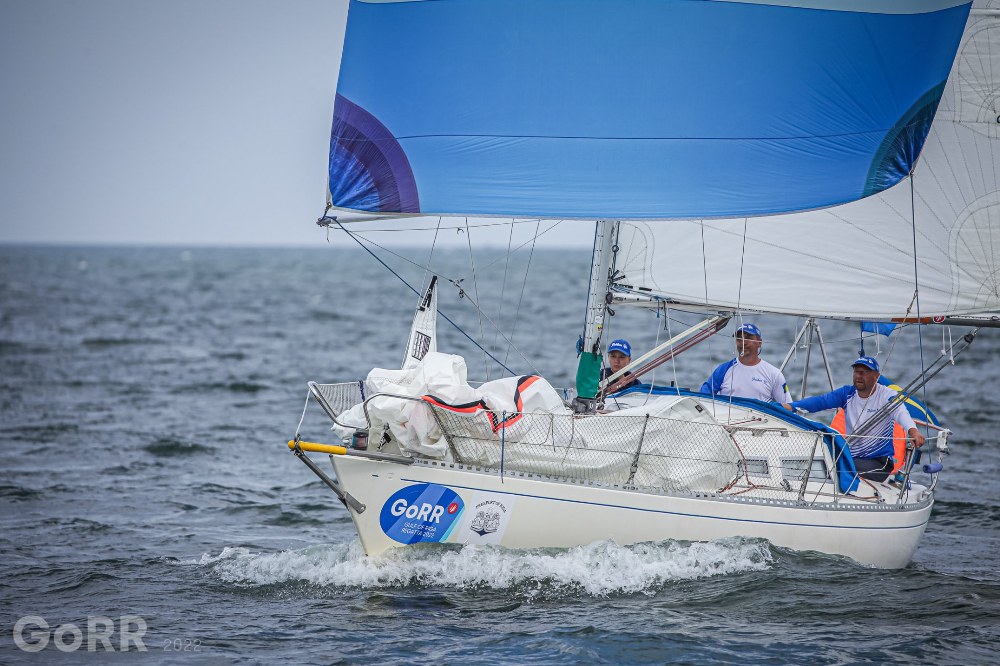

My Hobbies

Sailing (together with my daughters or Singlehanded). Participated in regattas as Doublehanded and Singlehanded.
In fact - Sailing it 2nd thing afеer family. This is not just a hobby - it is a disease, a passion with a head.
That is why I put it off the list.
- Book Reading;
- Guitar Playing;
- In winter, to avoid rusting, I do Taekwondo with my youngest daughter;
- Archery.